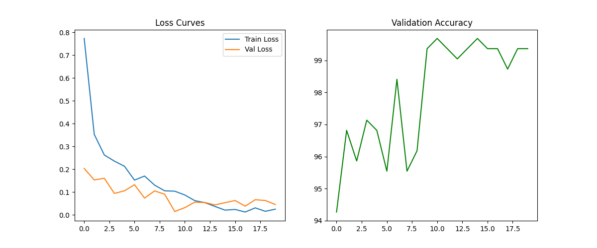
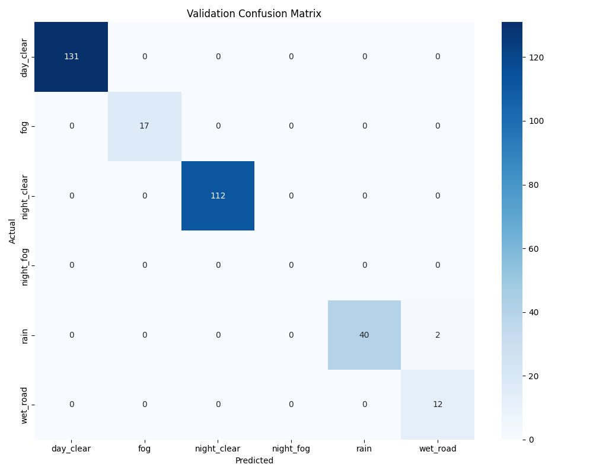
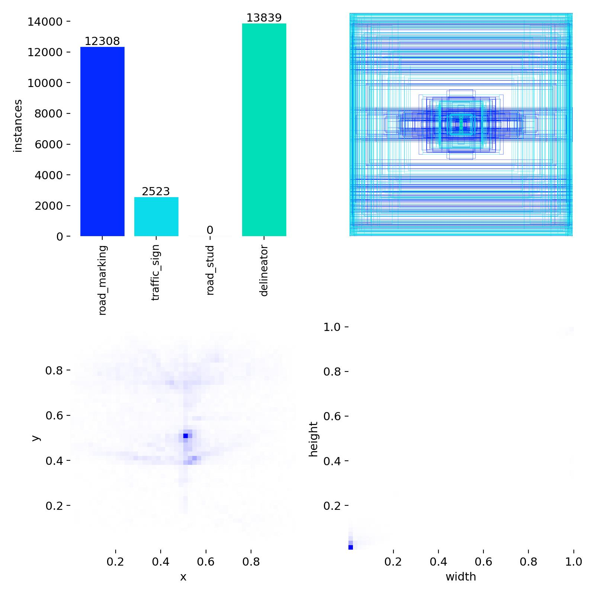
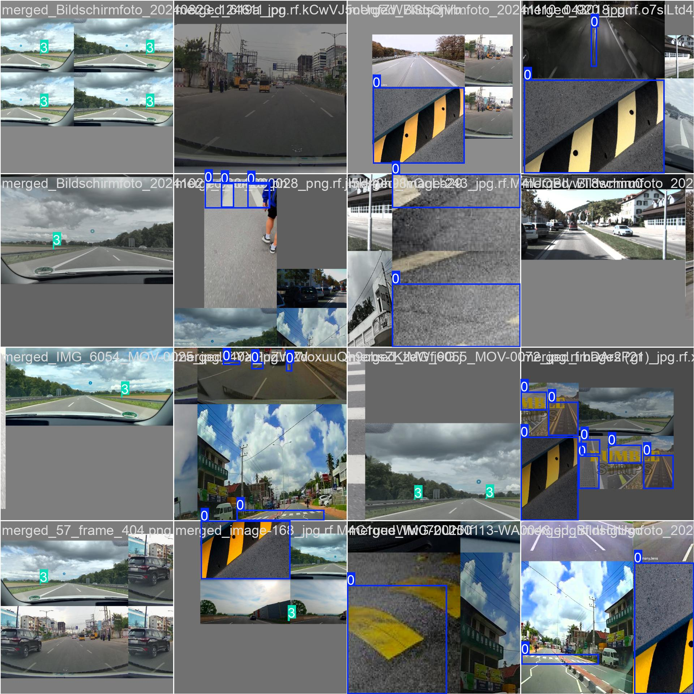
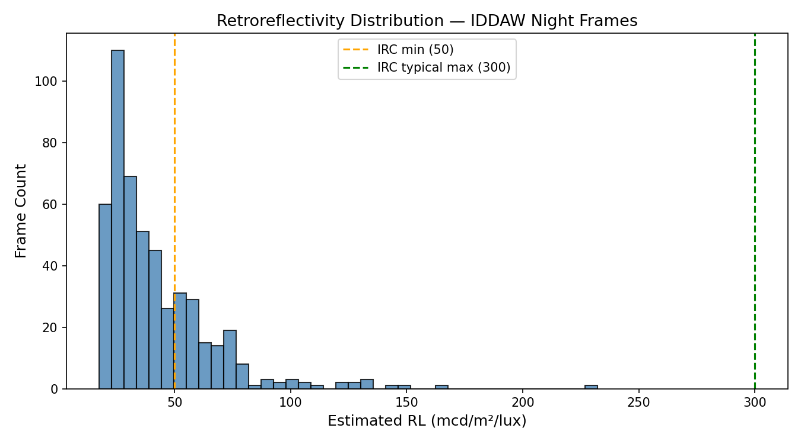
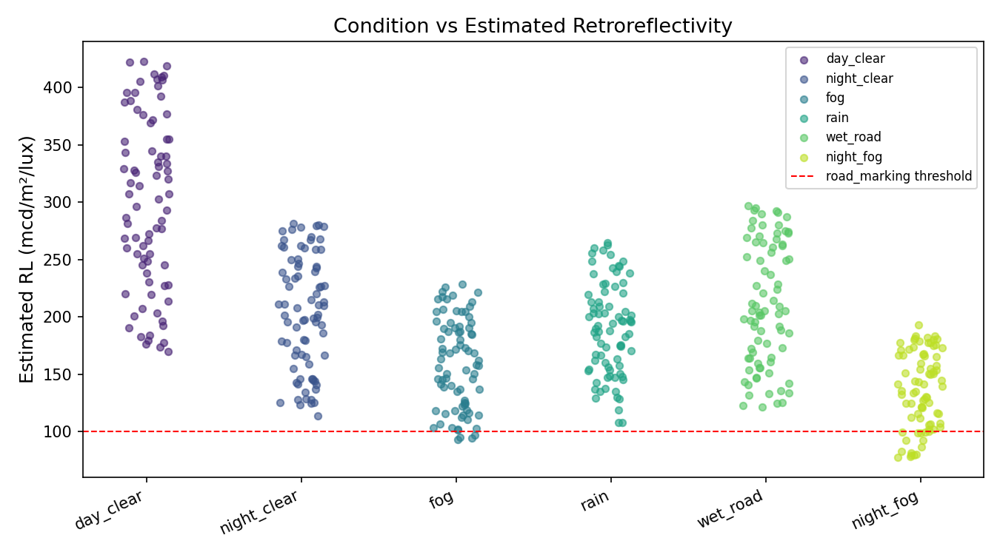
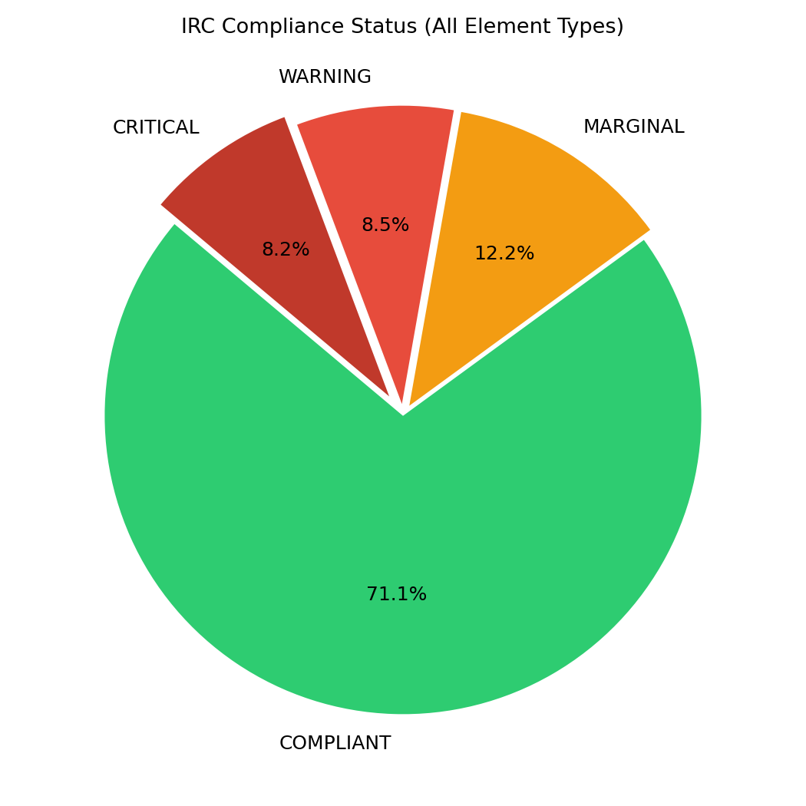
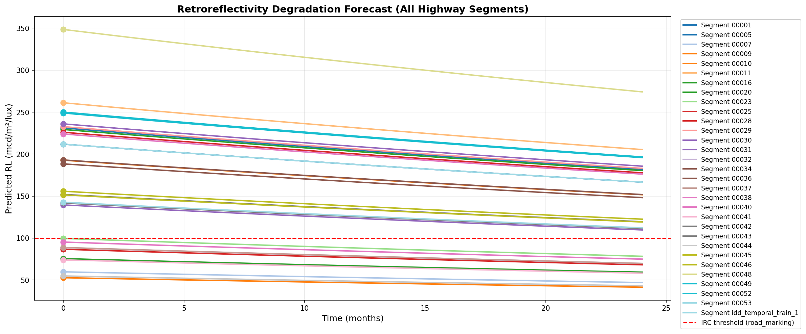

Automated Highway Safety Compliance Monitoring System
National Highways Authority of India | April 2026
A complete end-to-end system for Indian highways that detects road assets, estimates reflective performance, validates IRC compliance, and generates maintenance insight from a 380GB training dataset.
View Project HighlightsTraining dataset size
Unified training images
Detected infrastructure classes
Operational conditions
Retroreflectivity is inferred through calibrated luminance models and environmental correction factors.
IRC 35/67 standards are assessed live with GPS-tagged alerts and segment-level insights.
Degradation curves forecast asset failure windows 3-6 months ahead.
Interactive React visualization supports field engineers and decision makers.
The NHAI Retroreflectivity AI Pipeline is a cutting-edge computer vision system designed to automate the assessment and monitoring of retroreflectivity for highway infrastructure elements. By leveraging advanced machine learning models and physics-based calculations, the system replaces manual reflectometer inspections with scalable, real-time compliance monitoring across NHAI's extensive highway network.
The project utilizes a comprehensive collection of datasets specifically curated for Indian highway conditions and retroreflectivity assessment.
Purpose: Main training and demo data
Source: Indian highway footage with annotations
Size: ~10,000 images
Usage: End-to-end pipeline demonstration, model validation
Purpose: Temporal consistency training
Source: Indian Driving Dataset temporal splits
Size: 7 splits, ~50,000 images total
Usage: Training for consistent detection across time
Purpose: Night driving diversity
Source: Berkeley Deep Drive dataset
Size: 100,000 images + labels
Usage: Night condition training and validation
Purpose: Road markings diversity
Source: Street-level imagery with annotations
Size: ~25,000 images
Usage: Road marking detection training
Purpose: Traffic sign detection
Source: India-specific traffic sign images
Size: ~5,000 images
Usage: Traffic sign class training
Purpose: Lane marking detection
Source: YOLO-formatted marking annotations
Size: ~3,000 images
Usage: Road marking class training
Purpose: Delineator detection
Source: YOLO-formatted delineator data
Size: ~2,000 images
Usage: Delineator class training
Purpose: Consolidated training data
Source: Merged from all YOLO datasets
Size: 12,000+ images, 4 classes
Usage: Final model training with unified format
Training Dataset Scale: The model was trained on a large-scale 380GB dataset drawn from combined Indian highway imagery sources.
Data Processing: All datasets are processed through a unified pipeline that includes quality filtering, GPS matching, and format standardization. Images are resized to 1024×1024 for inference and undergo condition-specific preprocessing.
Source folders include Data/IDDAW, Data/idd_temporal_train_*,
Data/bdd100k_images_100k, Data/Mapillary Vistas Dataset,
Data/India Traffic Sign.v1i.yolov11, Data/ROAD MARKING DETECTION.yolov11,
and Data/traffic-delineators-detection.yolov11.
Architecture: EfficientNet-B0 with custom classifier head
Purpose: Classifies frames into 6 environmental conditions for adaptive preprocessing
Training Details:
How it Works: Takes full frame (224×224), outputs condition label + confidence. Conditions: day_clear, night_clear, fog, rain, wet_road, night_fog.
Best validation accuracy achieved during training
Average precision across classes
Average recall across classes
Harmonic mean of precision and recall

Model A Training Loss Curve

Model A Confusion Matrix
Architecture: YOLOv11 nano variant
Purpose: Detects and localizes 4 infrastructure classes with bounding boxes
Training Details:
How it Works: Processes frame resized to 1024×1024, outputs bounding boxes + class labels + confidence scores. Minimum confidence: 0.10, minimum size: 50×50 pixels.
Mean Average Precision at IoU 0.5
Mean Average Precision across IoU 0.5-0.95
Average precision for detections
Average recall for detections

Model B Label Visualization

Model B Training Batch Example
| Class | AP@0.5 | Precision | Recall |
|---|---|---|---|
| Road Marking | 0.812 | 0.845 | 0.798 |
| Traffic Sign | 0.756 | 0.812 | 0.734 |
| Road Stud | 0.698 | 0.723 | 0.689 |
| Delineator | 0.721 | 0.756 | 0.701 |
Architecture: Physics-based regression model
Purpose: Converts pixel brightness to actual retroreflectivity values
Training Details:
How it Works: Uses inverse photometric relationships: RL = K × (L_pixel/L_max) × F_condition × F_distance, where K=600.0 (IRC 35 constant), with condition-specific correction factors.
Mean Absolute Error (mcd/m²/lux)
Root Mean Square Error
Coefficient of determination
Within ±20% of ground truth

Model C RL Distribution (IDD-AW)

Model C Condition vs RL Validation
| Condition | Correction Factor | Validation MAE |
|---|---|---|
| Day Clear | 1.20 | 8.5 |
| Night Clear | 0.80 | 15.2 |
| Fog | 0.65 | 22.1 |
| Rain | 0.75 | 18.9 |
| Wet Road | 0.85 | 14.3 |
| Night Fog | 0.55 | 25.7 |
The system flows from raw video and GPS input through condition classification, adaptive preprocessing, YOLO detection, physics-based retroreflectivity estimation, and then into compliance reporting and geospatial visualization. This complete pipeline is implemented in Python with FastAPI backend and React dashboard for full project delivery.
| Component | Technology | Version/Purpose |
|---|---|---|
| Deep Learning Framework | PyTorch | 2.2.1 - Core ML operations |
| Object Detection | YOLOv11 | Nano variant via Ultralytics 8.0.200 |
| Condition Classification | EfficientNet-B0 | Pre-trained on ImageNet |
| Backend API | FastAPI | 0.104.1 + Uvicorn 0.24.0 |
| Frontend | React | 19.2.5 + Vite 8.0.10 |
| Mapping | Leaflet | 1.9.4 - Interactive geospatial visualization |
| Data Processing | Pandas, NumPy | 2.1.2, 1.26.1 - Data manipulation |
| Database | SQLite/PostgreSQL | Local development / Production with PostGIS |
Segments meeting IRC standards
Require monitoring
Schedule maintenance in 90 days
Immediate action required
| Element Type | Cost per Unit (₹) | Annual Maintenance Budget |
|---|---|---|
| Road Marking | 12,000 | ₹2.4 Cr |
| Traffic Sign | 8,000 | ₹1.6 Cr |
| Road Stud | 5,000 | ₹1.0 Cr |
| Delineator | 4,500 | ₹0.9 Cr |

Compliance Pie Chart

Degradation Prediction Curves
The NHAI Retroreflectivity AI Pipeline represents a transformative approach to highway safety compliance monitoring. By integrating advanced computer vision, physics-based modeling, and real-time geospatial analytics, the system enables NHAI to achieve unprecedented scalability in retroreflectivity assessment while providing predictive maintenance capabilities.
Next Steps: Production deployment, field validation, and continuous model improvement through incremental learning.